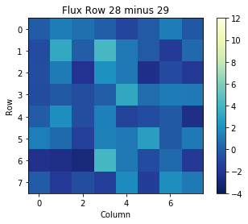
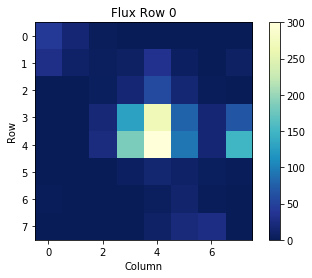

Plotting Images from Kepler Target Pixel Files#
This notebook tutorial demonstrates the loading and extracting of information from Kepler Target Pixel Files to plot images that show the pixels used to create data found in Kepler light curve files.
 
Table of Contents#
Introduction
Imports
Getting the Data
Reading FITS Extensions
Plotting the Images
The Aperture Extension
Additional Resources
About this Notebook
Introduction#
Target Pixel File background: The pixels used to create data in the light curve files are contained within a predefined mask. Each target pixel file packages these pixels as a time series of images in a binary FITS table. These files can then be used to perform photometry on. The binary table in a Target Pixel File (TPF) holds columns of data that contain an array in each cell.
Some notes about the file: kplr008957091-2012277125453_lpd-targ.fits.gz
The filename contains phrases for identification, where
kplr = Kepler
008957091 = Kepler ID number
2012277125453 = year 2012, day 277, time 12:54:53
lpd-targ = long cadence target pixel file
Defining some terms:
Cadence: the frequency with which summed data are read out. Files are either short cadence (a 1 minute sum) or long cadence (a 30 minute sum). The data we are using here is a long cadence file.
HDU: Header Data Unit; a FITS file is made up of Header or Data units that contain information, data, and metadata relating to the file. The first HDU is called the primary, and anything that follows is considered an extension.
For more information about the Kepler mission and collected data, visit the Kepler archive page. To read more details about Target Pixel Files and relevant data terms, look in the Kepler archive manual.
Top of Page
Imports#
Let’s start by importing some libraries to the environment:
numpy to handle array functions
astropy.io fits for accessing FITS files
astropy.table Table for creating tidy tables of the data
matplotlib.pyplot for plotting data
%matplotlib inline
import numpy as np
from astropy.io import fits
from astropy.table import Table
import matplotlib.pyplot as plt
Top of Page
Getting the Data#
Start by importing libraries from Astroquery. For a longer, more detailed description using of Astroquery, please visit this tutorial or read the Astroquery documentation.
from astroquery.mast import Mast
from astroquery.mast import Observations
Next, we need to find the data file. This is similar to searching for the data using the MAST Portal in that we will be using certain keywords to find the file. The object we are looking for is kplr008957091, collected by the Kepler spacecraft. We are also looking for a long cadence timeseries file.
keplerObs = Observations.query_criteria(target_name='kplr008957091', obs_collection='Kepler')
keplerProds = Observations.get_product_list(keplerObs[0])
yourProd = Observations.filter_products(keplerProds,extension='kplr008957091-2012277125453_lpd-targ.fits.gz',
mrp_only=False)
yourProd
| obsID | obs_collection | dataproduct_type | obs_id | description | type | dataURI | productType | productGroupDescription | productSubGroupDescription | productDocumentationURL | project | prvversion | proposal_id | productFilename | size | parent_obsid | dataRights | calib_level |
|---|---|---|---|---|---|---|---|---|---|---|---|---|---|---|---|---|---|---|
| str6 | str6 | str10 | str36 | str59 | str1 | str110 | str7 | str28 | str8 | str1 | str6 | str1 | str7 | str44 | int64 | str6 | str6 | int64 |
| 549936 | Kepler | timeseries | kplr008957091_lc_Q000000000011111111 | Target Pixel Long Cadence (TPL) - Q14 | C | mast:KEPLER/url/missions/kepler/target_pixel_files/0089/008957091/kplr008957091-2012277125453_lpd-targ.fits.gz | SCIENCE | Minimum Recommended Products | LPD-TARG | -- | Kepler | -- | GO30032 | kplr008957091-2012277125453_lpd-targ.fits.gz | 4365449 | 549936 | PUBLIC | 2 |
Now that we’ve found the data file, we can download it using the reults shown in the table above:
Observations.download_products(yourProd, mrp_only=False, cache=False)
Downloading URL https://mast.stsci.edu/api/v0.1/Download/file?uri=mast:KEPLER/url/missions/kepler/target_pixel_files/0089/008957091/kplr008957091-2012277125453_lpd-targ.fits.gz to ./mastDownload/Kepler/kplr008957091_lc_Q000000000011111111/kplr008957091-2012277125453_lpd-targ.fits.gz ...
[Done]
| Local Path | Status | Message | URL |
|---|---|---|---|
| str103 | str8 | object | object |
| ./mastDownload/Kepler/kplr008957091_lc_Q000000000011111111/kplr008957091-2012277125453_lpd-targ.fits.gz | COMPLETE | None | None |
Top of Page
Reading FITS Extensions#
Now that we have the file, we can start working with the data. We will begin by assigning a shorter name to the file to make it easier to use. Then, using the info function from astropy.io.fits, we can see some information about the FITS Header Data Units:
filename = "./mastDownload/Kepler/kplr008957091_lc_Q000000000011111111/kplr008957091-2012277125453_lpd-targ.fits.gz"
fits.info(filename)
Filename: ./mastDownload/Kepler/kplr008957091_lc_Q000000000011111111/kplr008957091-2012277125453_lpd-targ.fits.gz
No. Name Ver Type Cards Dimensions Format
0 PRIMARY 1 PrimaryHDU 58 ()
1 TARGETTABLES 1 BinTableHDU 287 4757R x 13C [D, E, J, 64J, 64E, 64E, 64E, 64E, 64E, J, E, E, 40E]
2 APERTURE 1 ImageHDU 48 (8, 8) int32
**No. 0 (Primary): **
This HDU contains meta-data related to the entire file.**No. 1 (Targettables): **
This HDU contains a binary table that has 13 columns containing a series of either scalar values or images. We will be taking some of the images from the table and plotting them in this tutorial.**No. 2 (Aperture): **
This HDU contains the image extension with data collected from the aperture. We will also use this to display a bitmask plot that visually represents the optimal aperture used to create the SAP_FLUX column in the light curve data.
For more detailed information about header extensions, look here.
Let’s say we wanted to see more information about the extensions than what the fits.info command gave us. For example, we can access information stored in the header of the Binary Table extension (No.1, TARGETTABLES). The following line opens the FITS file, writes the first HDU extension into header1, and then closes the file. Only 24 columns are displayed here but you can view them all by adjusting the range:
with fits.open(filename) as hdulist:
header1 = hdulist[1].header
print(repr(header1[1:25])) #repr() prints the info into neat columns
BITPIX = 8 / array data type
NAXIS = 2 / number of array dimensions
NAXIS1 = 1724 / length of first array dimension
NAXIS2 = 4757 / length of second array dimension
PCOUNT = 0 / group parameter count (not used)
GCOUNT = 1 / group count (not used)
TFIELDS = 13 / number of table fields
TTYPE1 = 'TIME ' / column title: data time stamps
TFORM1 = 'D ' / column format: 64-bit floating point
TUNIT1 = 'BJD - 2454833' / column units: barycenter corrected JD
TDISP1 = 'D14.7 ' / column display format
TTYPE2 = 'TIMECORR' / column title: barycenter - timeslice correction
TFORM2 = 'E ' / column format: 32-bit floating point
TUNIT2 = 'd ' / column units: day
TDISP2 = 'E14.7 ' / column display format
TTYPE3 = 'CADENCENO' / column title: unique cadence number
TFORM3 = 'J ' / column format: signed 32-bit integer
TDISP3 = 'I10 ' / column display format
TTYPE4 = 'RAW_CNTS' / column title: raw pixel counts
TFORM4 = '64J ' / column format: image of signed 32-bit integers
TUNIT4 = 'count ' / column units: count
TDISP4 = 'I8 ' / column display format
TDIM4 = '(8,8) ' / column dimensions: pixel aperture array
TNULL4 = -1 / column null value indicator
We can also view a table of the data from the Binary Table extension. This is where we can find the flux and time columns to be plotted later. Here only the first four rows of the table are displayed:
with fits.open(filename) as hdulist:
binaryext = hdulist[1].data
binarytab = Table(binaryext)
binarytab[0:4]
| TIME | TIMECORR | CADENCENO | RAW_CNTS | FLUX | FLUX_ERR | FLUX_BKG | FLUX_BKG_ERR | COSMIC_RAYS | QUALITY | POS_CORR1 | POS_CORR2 | RB_LEVEL |
|---|---|---|---|---|---|---|---|---|---|---|---|---|
| float64 | float32 | int32 | int32[8,8] | float32[8,8] | float32[8,8] | float32[8,8] | float32[8,8] | float32[8,8] | int32 | float32 | float32 | float32[8,5] |
| 1274.1395732864694 | 0.0022160665 | 57024 | 422568 .. 421938 | 41.62306 .. 0.49973154 | 1.0728891 .. 1.077012 | 166.55408 .. 166.43286 | 0.05004611 .. 0.05002594 | nan .. nan | 0 | 0.018315108 | -0.052525554 | 0.16289888 .. 0.22096205 |
| 1274.1600076621398 | 0.0022167421 | 57025 | 422568 .. 421938 | 41.12269 .. 0.40782627 | 1.0728829 .. 1.0770054 | 166.5374 .. 166.41513 | 0.05014606 .. 0.050128847 | nan .. nan | 0 | 0.018484294 | -0.052207224 | 0.19264737 .. 0.28943384 |
| 1274.1804419378168 | 0.0022174178 | 57026 | 422598 .. 421938 | 43.76557 .. 0.18402159 | 1.0735049 .. 1.0770029 | 166.44955 .. 166.32483 | 0.05003051 .. 0.05001035 | nan .. nan | 0 | 0.019123403 | -0.052663438 | 0.27529782 .. 0.28463778 |
| 1274.2008761132602 | 0.0022180933 | 57027 | 422588 .. 421938 | 42.315395 .. 0.26509726 | 1.073293 .. 1.076999 | 166.54523 .. 166.4112 | 0.05008907 .. 0.05007079 | nan .. nan | 0 | 0.018382369 | -0.052379206 | 0.2684216 .. 0.297417 |
Some of the columns (RAW_CNTS through COSMIC_RAYS) are 8x8 arrays. These are the pixels used for light curve data packaged as images into the Binary Table. Each of these arrays is an image taken at a certain time as seen in the TIME column. To find out how many times there are, we can run the following code to get the vertical length of the entire table:
print(len(binarytab['TIME']))
4757
Top of Page
Plotting the Images#
To better understand the arrays in the table, we can single out one cell and display its data. For example, let’s read the cell in Row 0, column FLUX. This is the flux data collected at time 1274.1395732864694.
binarytab['FLUX'][0]
array([[ 4.1623058e+01, 1.7780533e+01, 3.1153817e+00, -3.0876877e+00,
8.3767604e-03, -1.0850269e+00, -8.1516063e-01, -2.5957384e+00],
[ 3.0861683e+01, 1.0227163e+01, 5.5491271e+00, 7.6004462e+00,
3.4271725e+01, 6.9740272e+00, 1.0782831e+00, 7.1954594e+00],
[-1.4854238e+00, 5.4094785e-01, 3.5754349e+00, 1.8321907e+01,
5.8315243e+01, 1.7005610e+01, 1.4785897e+00, 2.1474166e-01],
[-2.9369431e+00, -3.0120549e-01, 1.9583700e+01, 1.2907016e+02,
2.6917322e+02, 7.8723610e+01, 1.8297552e+01, 6.7504066e+01],
[-5.1648269e+00, 6.6967867e-02, 2.4730293e+01, 1.8597522e+02,
3.9219736e+02, 9.2981400e+01, 1.8644941e+01, 1.4952176e+02],
[ 2.4195774e-01, -2.2746756e+00, -7.2001988e-01, 6.1791143e+00,
1.6116604e+01, 1.0269024e+01, 3.5868566e+00, 1.2844697e+00],
[ 2.1793385e+00, -2.0849459e+00, -2.2841897e+00, -2.2008568e-01,
5.5619407e+00, 1.3116534e+01, 1.8261925e+00, -2.2240562e+00],
[-2.1672373e+00, -4.2338033e+00, -2.9555788e+00, -9.1262859e-01,
8.5611248e+00, 2.2380089e+01, 2.7300879e+01, 4.9973154e-01]],
dtype=float32)
We can then plot this array as an image, where each pixel is shown as a color value from the above array:
plt.title('Flux Row 0')
plt.xlabel('Column')
plt.ylabel('Row')
plt.imshow(binarytab['FLUX'][0], cmap=plt.cm.YlGnBu_r)
plt.colorbar()
plt.clim(0,300)
This plot can be made for any of the arrays in the table. To read in and plot a different cell, change the row number from [0] to another number.
Some arrays contain no numbers, only NaN values. This results in completely blank image frames:
binarytab['FLUX'][34]
array([[nan, nan, nan, nan, nan, nan, nan, nan],
[nan, nan, nan, nan, nan, nan, nan, nan],
[nan, nan, nan, nan, nan, nan, nan, nan],
[nan, nan, nan, nan, nan, nan, nan, nan],
[nan, nan, nan, nan, nan, nan, nan, nan],
[nan, nan, nan, nan, nan, nan, nan, nan],
[nan, nan, nan, nan, nan, nan, nan, nan],
[nan, nan, nan, nan, nan, nan, nan, nan]], dtype=float32)
plt.title('Flux Row 34')
plt.xlabel('column')
plt.ylabel('row')
plt.imshow(binarytab['FLUX'][34], cmap=plt.cm.YlGnBu_r)
plt.colorbar()
plt.clim(0,300)
We can also view the difference between one frame and another. For example, if we want to see the change from the flux at time in row 20 subtracted from the flux at time in row 19, we can write the following:
arr = np.subtract(binarytab['FLUX'][28], binarytab['FLUX'][29])
print(arr)
[[-0.10368347 1.2084408 0.7001476 -0.04124689 -1.0750767 -0.13303757
1.1955365 -0.308725 ]
[-0.8178196 3.288806 -0.01144838 4.190505 1.0418396 -0.12780714
-1.6264764 0.39404774]
[-0.80597305 1.1767769 -2.1247475 2.0623436 1.0380287 -2.25745
-0.9374518 -1.7162728 ]
[-0.8251231 -0.22384816 -0.72644997 -0.04460144 3.20755 0.5736923
1.1855717 1.1150208 ]
[-0.10608602 1.8990426 -0.7197819 1.3527222 -1.2155457 -0.84685516
-0.22213173 -2.4338684 ]
[ 1.3052053 0.488378 -1.4316924 1.3895159 1.0554571 2.7365294
-0.21660066 1.1082048 ]
[-2.248003 -2.3650186 -2.852107 4.1624756 1.0340705 -0.8345432
0.48870218 -1.7171237 ]
[-0.10844719 -1.6385655 -0.7226268 -1.4699272 1.7503319 -1.532999
1.8900471 1.1174535 ]]
We can then plot this array as well:
plt.title('Flux Row 28 minus 29')
plt.xlabel('Column')
plt.ylabel('Row')
plt.imshow(arr, cmap=plt.cm.YlGnBu_r)
plt.colorbar()
plt.clim(-4, 12)
Top of Page
The Aperture Extension#
We can also make a plot of the third header extension; the image extension. This data is stored as an array of integers that encodes which pixels were collected from the spacecraft and which were used in the optimal aperture (look here for more information on the aperture extension).
First, we need to re-open the FITS file and access the header. Next, we read the the image extension (No. 2, APERTURE) and print it as an array:
with fits.open(filename) as hdulist:
imgdata = hdulist[2].data
print(imgdata)
[[1 1 1 1 1 1 1 1]
[1 1 1 1 1 1 1 1]
[1 1 1 1 1 1 1 1]
[1 1 1 1 3 1 1 1]
[1 1 1 1 3 1 1 1]
[1 1 1 1 1 1 1 1]
[1 1 1 1 1 1 1 1]
[1 1 1 1 1 1 1 1]]
We can then plot the above array, which will show the pixels used in the optimal aperture for photometry:
plt.figure()
plt.title('TPF APERTURE')
plt.xlabel('Column')
plt.ylabel('Row')
plt.imshow(imgdata, cmap=plt.cm.YlGnBu_r)
<matplotlib.image.AxesImage at 0x7f3e7675d180>
Top of Page
Aditional Resources#
For more information about the MAST archive and details about mission data:
MAST API
Kepler Archive Page (MAST)
Kepler Archive Manual
Exo.MAST website
About this Notebook#
Author: Josie Bunnell, STScI SASP Intern
Updated On: 08/10/2018
Top of Page